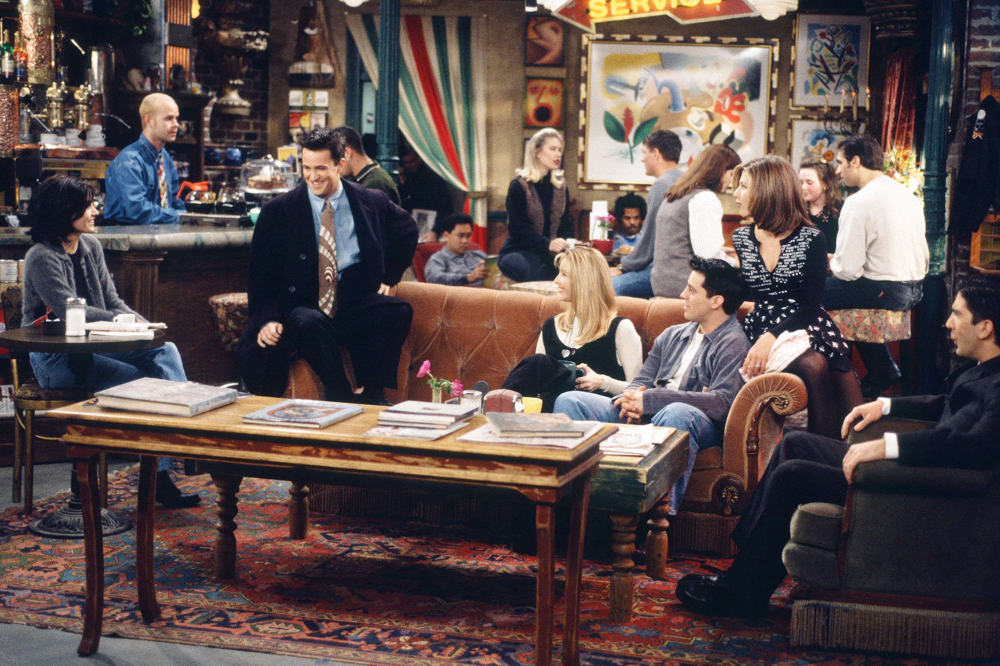
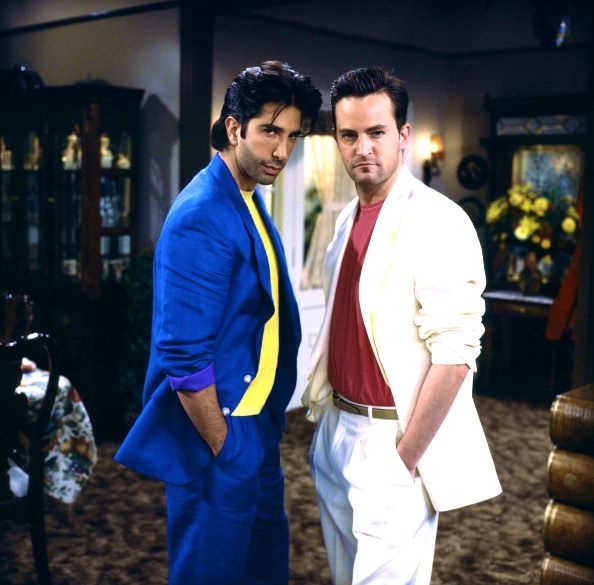
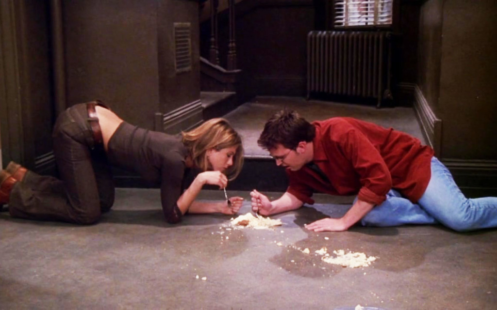
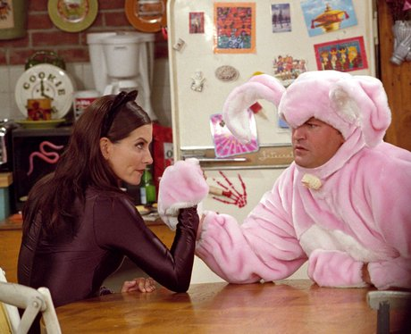
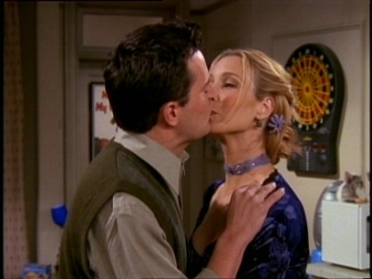
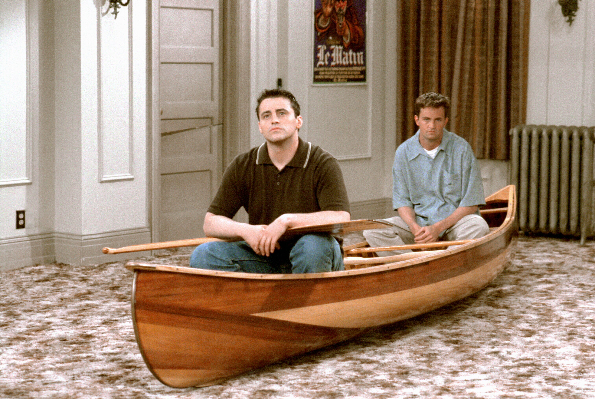
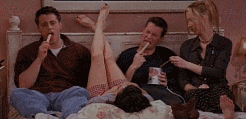
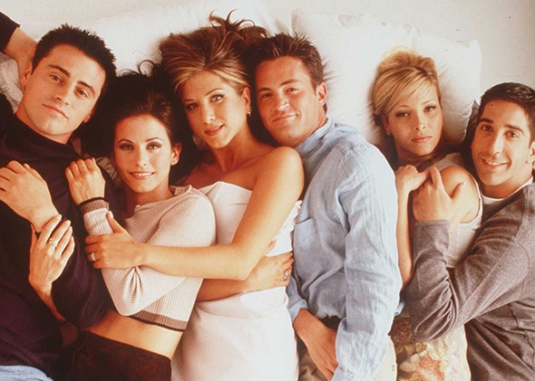

Sitting in our usual seats in Central Perk, drinking coffee, and whining about the events in our lives.
Let's just say, Miami Vice was very popular while Ross and I were in college. And I am ashamed there is photo evidence of it.
Rachel and I eating the leftovers of the cheesecake we stole from our elderly neighbor. I wish I could say that it's not as bad as it sounds, but it's not, it's worse.
How my wife had a Halloween costume as great as Cat Woman and I ended up as a pink fluffy bunny, I have no idea.
This was during the time Monica and I were still keeping our relationship a secret. I had to go on a date with Phoebe to prove I was single, let's just say it didn't go well.
Joey voluntarily was trapped in our entertainment center, and we were robbed of all of our furniture. We spend a long time watching TV from the canoe in the middle of our living room.
Being trapped in Monica's bedroom for hours on end while Ross and Rachel were breaking up in the next room was a desperate time. Wax was the only semi food-like substance, so we had no choice but to survive on eating it.
Just a casual snuggle session.